Jednotka · úvod
Přehled a modely řady TP
Manuál se týká rekuperačních jednotek E-VIPO MVHR (Mechanical Ventilation with Heat Recovery) řady TP. Každý výkonový stupeň existuje ve dvou provedeních:
- ERV (Energy Recovery Ventilation) — entalpický výměník, předává i vlhkost, bez odvodu kondenzátu
- HRV (Heat Recovery Ventilation) — tepelný výměník, vyžaduje odvod kondenzátu
| ERV modely | HRV modely |
|---|---|
| TP350-ERV-B-Z-EC | TP350-HRV-B-Z-EC |
| TP400-ERV-B-Z-EC | TP400-HRV-B-Z-EC |
| TP450-ERV-B-Z-EC | TP450-HRV-B-Z-EC |
| TP500-ERV-B-Z-EC | TP500-HRV-B-Z-EC |
| TP550-ERV-B-Z-EC | TP550-HRV-B-Z-EC |
| TP600-ERV-B-Z-EC | TP600-HRV-B-Z-EC |
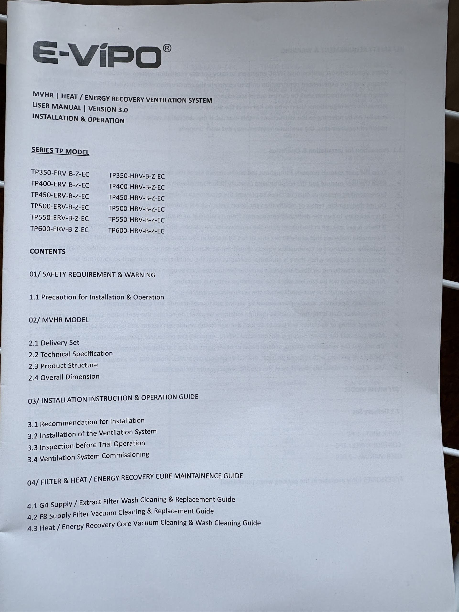
Jednotka · kapitola 01
Bezpečnostní požadavky a upozornění
Výběr, projekt a montáž větracího systému svěřte odborníkům na vzduchotechniku; elektrická i stavební část musí odpovídat platným místním a národním normám a předpisům. Kdo tyto podmínky nesplňuje, může instalaci provést podle pokynů v tomto návodu — při nedodržení požadavků ale systém nemusí pracovat správně.
1.1 Zásady pro instalaci a provoz
- Návod uchovejte po celou dobu životnosti zařízení a před instalací i provozem si jej pečlivě přečtěte
- Přijměte opatření proti vzniku nebezpečných situací
- Jednotku svévolně nerozebírejte, neopravujte ani neupravujte bez konzultace s odborníkem
- Náhradní díly kupujte u dodavatele nebo servisu
- Při úniku plynu v domě větrejte okny — jednotku nepoužívejte
- Hořlavé a výbušné látky neskladujte ve stejném prostoru s jednotkou
- Při neobvyklém zvuku, zápachu či jiné anomálii kontaktujte dodavatele
- Zabraňte kontaktu přenášeného vzduchu se zdroji ohně (otevřený plamen, oleje, chemikálie)
- Za provozu nesmí být vzduchovody ucpané
- Jednotku chraňte před přímým sluncem a vlhkem, umístěte ji v suchém větraném prostoru
- Instalaci, provoz i údržbu smí provádět jen vyškolená a kvalifikovaná osoba
- Při extrémní prašnosti venku (např. písečná bouře) systém nepoužívejte
- Chybné zapojení nebo obsluha vede k vážnému poškození jednotky a úrazům
- Před sejmutím krytu, instalací nebo zásahem se ujistěte, že je odpojené napájení
- Jednotku, ovládací panel ani další díly při instalaci, provozu a údržbě nenamočte
- Děti a osoby se sníženými fyzickými, mentálními či smyslovými schopnostmi nesmí zařízení obsluhovat
- Použité nářadí a materiál musí odpovídat požadavkům instalace
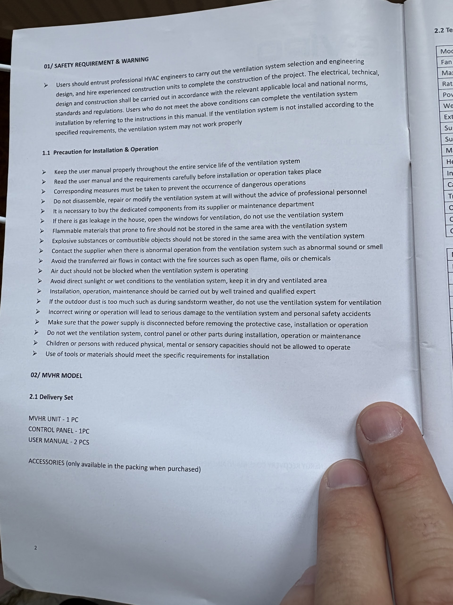
Jednotka · kapitola 02
2.1 Obsah dodávky a příslušenství
- Jednotka MVHR — 1 ks
- Ovládací panel — 1 ks
- Uživatelský manuál — 2 ks
- Příslušenství (jen pokud bylo součástí koupě)
Volitelné příslušenství
| Příslušenství | Model | Poznámka |
|---|---|---|
| Externí čidlo CO₂ / RH & teplota | ESB-CRT-01 | Deska čidla pro automatiku VK8; přes propojovací desku lze připojit až 8 externích čidel |
| Externí čidlo RH & teplota | ESB-RT-01 | |
| Propojovací deska čidel | ESCB-CRT-01 | Připojuje externí čidla k řídicímu systému |
| Externí boost tlačítko | EBS-01 | Přes propojovací desku až 10 tlačítek |
| Propojovací deska boost tlačítek | EBCB-01 | Připojuje boost tlačítka k řídicímu systému |
| Externí elektrický ohřívač | EEH-01 | Přes reléovou desku až 2 ohřívače |
| Externí elektrická vzduchová klapka | EEAD-01 | Přes reléovou desku až 2 klapky |
| Externí reléová deska | ERB-01 | Připojuje externí klapky a ohřívače k řídicímu systému |
Žádná z těchto položek není standardní součástí dodávky — vše se dokupuje jako příslušenství.
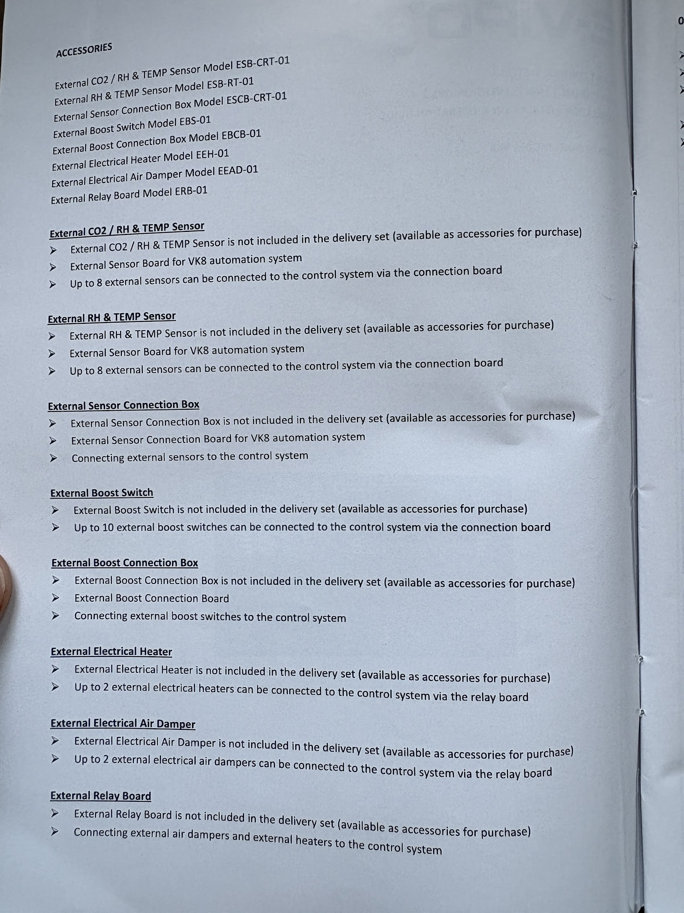
Jednotka · kapitola 2.2
2.2 Technická specifikace
Hodnoty společné pro všechny modely: EC motory ventilátorů, napájení 200–240 V~ 50/60 Hz, hmotnost 47 kg, odtahový filtr G4, přívodní filtr G4 + volitelný F8, protiproudý výměník, izolace i skříň z EPP, teplota přenášeného vzduchu −25 až +50 °C, provozní teplota okolí +5 až +40 °C, relativní vlhkost okolí < 80 %, napojení na potrubí Ø 160 mm.
| Model (ERV / HRV) | Max. průtok | Max. příkon ERV | Max. příkon HRV | Max. statický tlak |
|---|---|---|---|---|
| TP350 | 350 m³/h @ 100 Pa | 100 W · 0,74 A | 104 W · 0,76 A | 770 Pa |
| TP400 | 400 m³/h @ 100 Pa | 143 W · 1 A | 150 W · 1 A | 770 Pa |
| TP450 | 450 m³/h @ 100 Pa | 194 W · 1,3 A | 210 W · 1,4 A | 770 Pa |
| TP500 | 500 m³/h @ 100 Pa | 254 W · 1,67 A | 280 W · 1,77 A | 770 Pa |
| TP550 | 550 m³/h @ 100 Pa | 370 W · 2,3 A | 390 W · 2,4 A | 770 Pa |
| TP600 | 600 m³/h @ 100 Pa | 444 W · 2,7 A | 460 W · 2,8 A | 790 Pa |
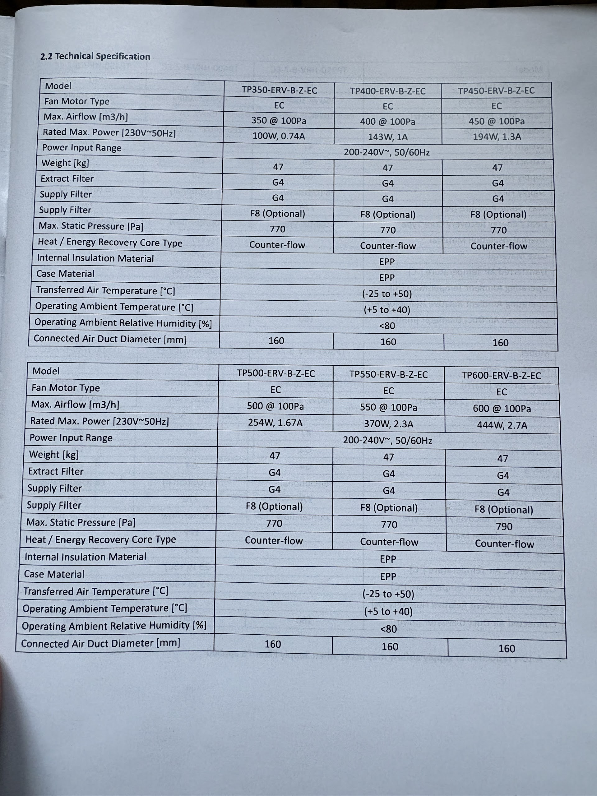
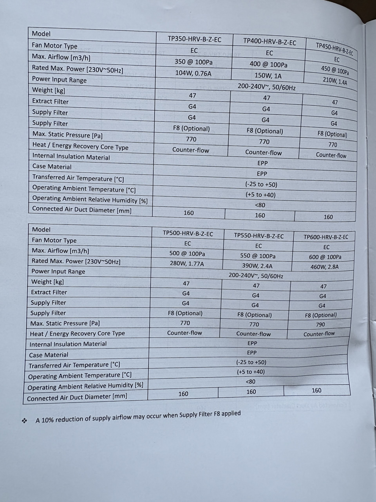
Jednotka · kapitola 2.3
2.3 Konstrukce jednotky
Jednotka se vyrábí v levé a pravé orientaci — liší se pořadím hrdel (přívod do domu / odtah z domu / sání venkovního vzduchu / výfuk ven). Uvnitř jednotky najdete:
- čidlo teploty a relativní vlhkosti (pro automatiku VK8) — na odtahové straně
- odtahový ventilátor a přívodní ventilátor (EC)
- bypassovou klapku
- řídicí jednotku
- teplotní čidla (pro automatiku VK2 / VK8)
- přívodní filtr G4, odtahový filtr G4, volitelný přívodní filtr F8
- protiproudý výměník tepla
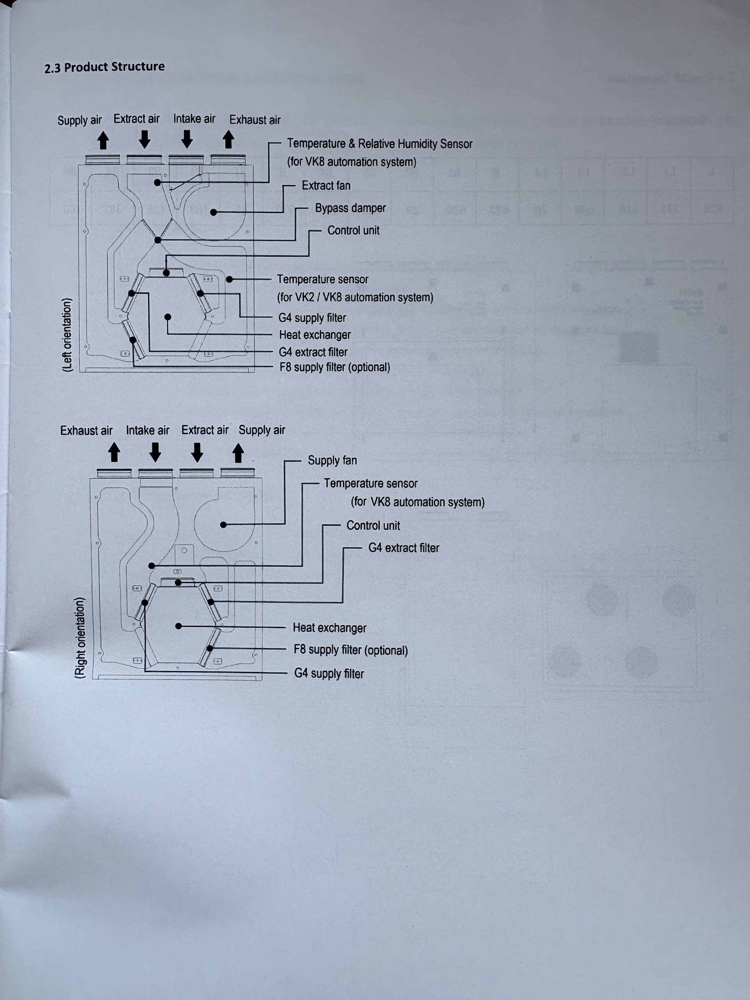
Jednotka · kapitola 2.4
2.4 Rozměry
| L | L1 | L2 | L3 | L4 | B | B1 | B2 | B3 | B4 | H | H1 | H2 | H3 | H4 | ØD |
|---|---|---|---|---|---|---|---|---|---|---|---|---|---|---|---|
| 820 | 391 | 116 | 680 | 70 | 623 | 620 | 29 | 320 | 150 | 970 | 40 | 163 | 425 | 382 | 160 |
Všechny rozměry v milimetrech.
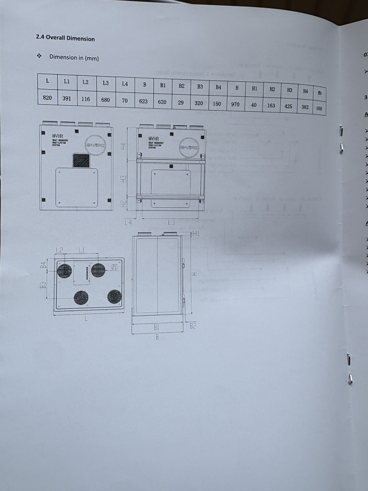
Jednotka · kapitola 03
3.1–3.2 Instalace
3.1 Doporučení pro instalaci
Vedení vzduchovodů
- Vzduchovody veďte vodorovně nebo svisle a co nejrovněji
- Kotvěte je sponami každý 1 metr, aby nevibrovaly
- Spoje potrubí s jednotkou zajistěte hliníkovou (tin foil) páskou a stahovací páskou
- Páska musí být hladká, nezvrásněná a těsná — spoje utěsněte proti úniku vzduchu
- Délky jednotlivých větví nepřekračujte nad běžná doporučení
- Vzduchovody musí být z nehořlavých materiálů s tepelnou izolací
- Kolen používejte co nejméně; oblouk kolena navrhujte jako kruhový, ne ostrý 90° zlom
Umístění nasávání a výfuku
- Vyústky na fasádě a stropech volte s malým odporem vzduchu
- Zabraňte zpětnému nasátí znečištěného odpadního vzduchu do čerstvého přívodu
- Mezi nasáváním a výfukem na fasádě dodržte dostatečný odstup
- Nasávání i výfuk utěsněte proti netěsnostem
- Interiérové vyústky neumisťujte do mrtvých koutů místností
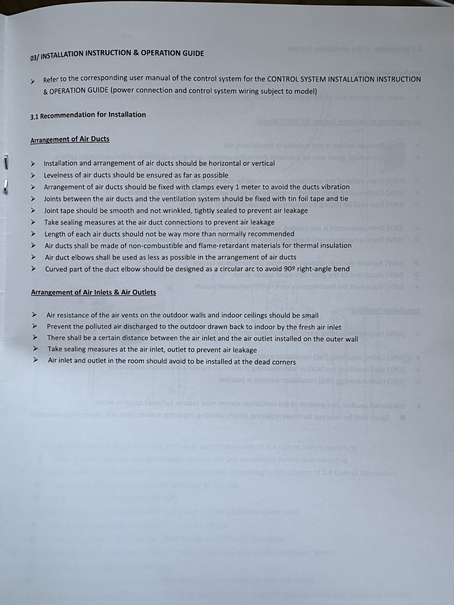
3.2 Instalace jednotky
Volba servisní strany
- Zvolte správnou stranu jednotky pro instalaci (levá, nebo pravá orientace)
Odvod kondenzátu — jen HRV modely
- Odvod kondenzátu není součástí dodávky; kondenzát vzniká podle počasí za provozu
- Výstup kondenzátu musí uživatel napojit potrubím do kanalizace
- Potrubí spádujte dolů, průměr odpovídá vypouštěcímu otvoru
- Postup: vyjměte výměník → sifon/vypouštěcí koncovku namontujte dnem vzhůru → výměník vraťte zpět
ERV modely
- Odvod kondenzátu se nepřipojuje — zátky z vypouštěcích otvorů nevyndávejte (unikal by vzduch)
- Entalpický výměník kondenzát netvoří, drenáž není potřeba
Možné polohy
- HRV: pouze svislá montáž na stěnu
- ERV: na strop (naležato), na stěnu (svisle i vodorovně), na podlahu (naležato)
- Kolem jednotky nechte dost místa na výměnu filtrů, servis, opravy, údržbu a demontáž
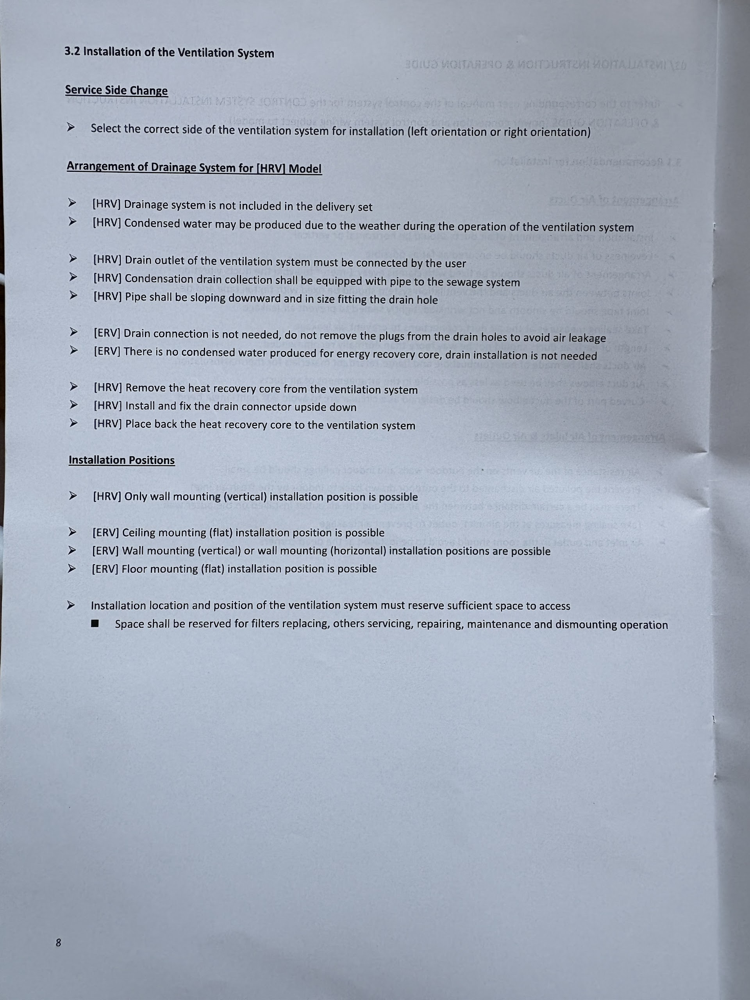
Jednotka · montáž
Montáž na stěnu
- Před montáží zvažte materiál nosné plochy a hmotnost jednotky — stěna musí jednotku dlouhodobě unést
- Vyměřte čtyři kotevní body podle kapitoly 2.4 Rozměry; ověřte výšku vrtání a průměr otvorů, body si na stěně označte
- Vyvrtejte čtyři otvory pro hmoždinky, hmoždinky usaďte
- Na stěnu přišroubujte dvě vodorovné montážní lišty
- Na zvolené zadní straně jednotky vyjměte čtyři malé čtverce z EPP, na závitové tyče otvorů nasaďte matice a přišroubujte dvě svislé montážní lišty na jednotku
- Jednotku zavěste na stěnu na všechny čtyři lišty
- Typ šroubů, tyčí a komponent volte podle podmínek stavby; jednotku na stěně zajistěte maticemi s podložkami na všech čtyřech úchytech
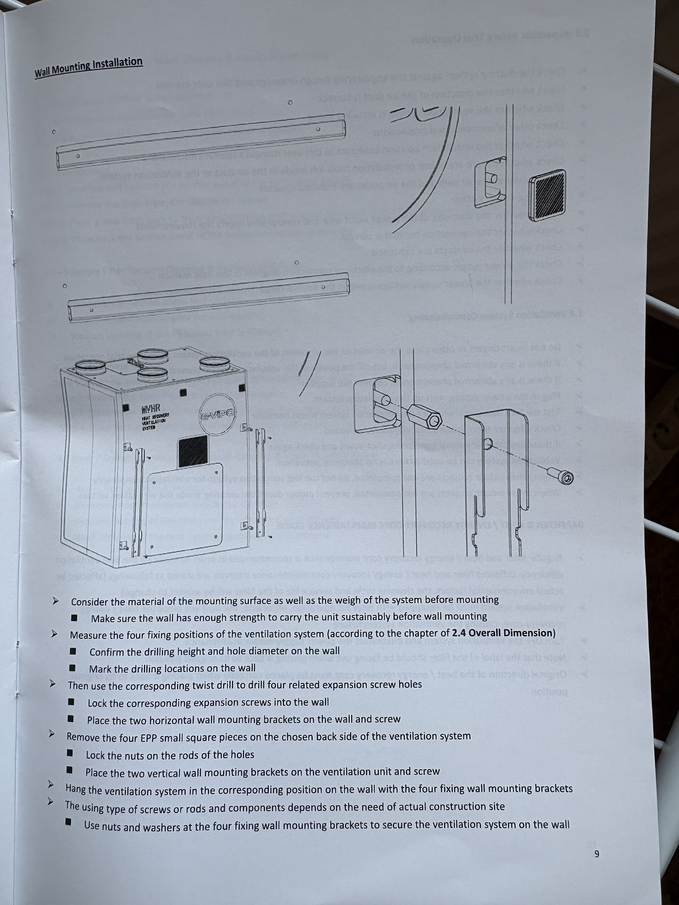
Jednotka · kapitola 3.3–3.4
Kontrola a uvedení do provozu
3.3 Kontrola před zkušebním provozem
- Zkontrolujte potrubní systém proti projektové dokumentaci a tomuto návodu
- Ověřte správný směr proudění v potrubí a pevné ukotvení jednotky
- Zkontrolujte všechna výše uvedená opatření a soulad umístění s pokyny návodu
- Ujistěte se, že v potrubí ani jednotce nezůstaly nečistoty nebo nářadí
- Zkontrolujte pevné osazení nasávání i výfuku
- Zkontrolujte elektrický obvod: průřezy napájecích a ovládacích vodičů, způsob zapojení, dotažení kontaktů
- Napájení zkontrolujte podle schématu zapojení; napětí musí být v normálním rozsahu 230 V~
3.4 Uvedení větracího systému do provozu
- Během zkoušky nestrkejte prsty ani předměty do nasávání a výfuku
- Při jakékoli anomálii ihned odpojte napájení a kontaktujte dodavatele
- Zapojte napájení a spusťte jednotku; otestujte ventilátory a správný chod systému
- Sledujte neobvyklé vibrace a zvuky; při potížích vypněte a zkontrolujte znovu
- Bez anomálií je možné systém používat
- Dokud nejsou dokončeny ostatní vnitřní stavební práce, systém dočasně nepoužívejte k větrání a zabraňte vniknutí stavebního prachu do jednotky
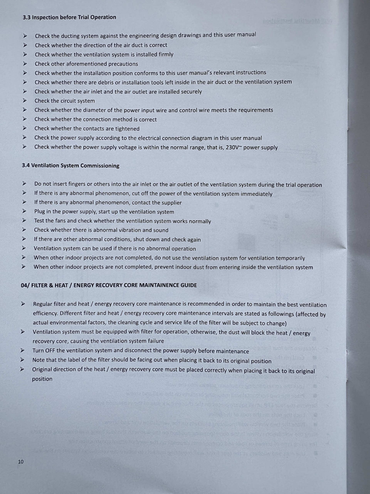
Jednotka · kapitola 04
Údržba filtrů a výměníku
- Pro udržení účinnosti větrání se doporučuje pravidelná údržba filtrů a výměníku; intervaly níže ovlivňuje reálné prostředí — cyklus čištění i životnost filtru se mohou lišit
- Jednotka musí běžet vždy s filtry, jinak prach zanese výměník a systém selže
- Před údržbou jednotku vypněte a odpojte napájení
- Filtr vracejte štítkem ven; výměník vracejte ve správné původní orientaci
| Díl | Interval | Údržba |
|---|---|---|
| 4.1 · Filtry G4 (přívod i odtah) | 3 měsíce | čištění praním, nebo výměna |
| 4.2 · Filtr F8 (přívod) | 6 měsíců | čištění vysavačem, nebo výměna |
| 4.3 · Výměník tepla/energie | 12 měsíců | čištění vysavačem i praním (nevyměňuje se) |
Výměna filtru (G4 i F8 shodně)
- Krok 1: odšroubujte a sejměte servisní panel jednotky
- Krok 2: vyjměte filtr
- Krok 3: nový filtr vložte na původní místo ve správné orientaci
- Krok 4: vraťte servisní panel a přišroubujte
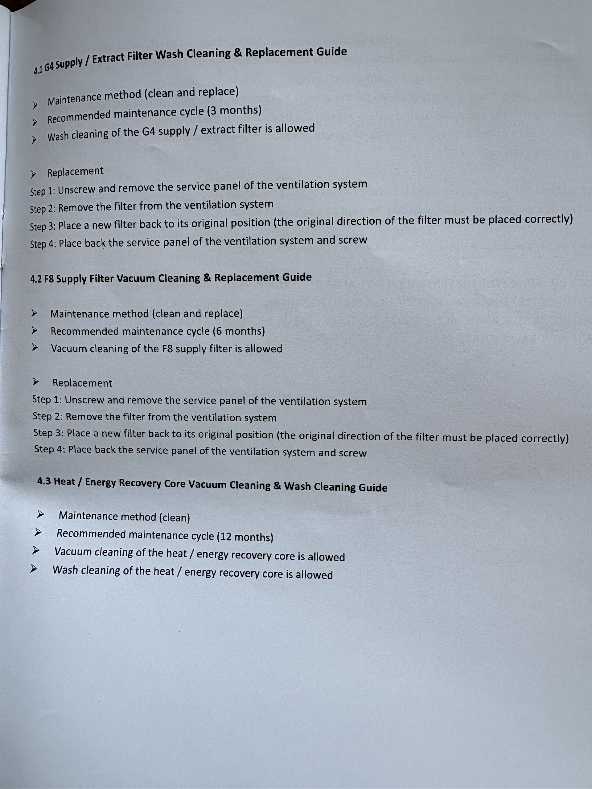
Jednotka · závěr
Závěrečná upozornění
- Při potížích za provozu nebo údržby kontaktujte dodavatele či servis; zásahy provádějte až po schválení — jinak výrobce neodpovídá za následky neautorizovaných změn
- Výrobce nenese odpovědnost za následky úprav jednotky nebo elektroniky bez jeho svolení
- Při instalaci či užívání v rozporu s požadavky bude pozáruční servis účtován
- Obsah manuálu i specifikace se mohou změnit bez předchozího upozornění
- Schémata v manuálu jsou orientační, rozhoduje skutečné provedení
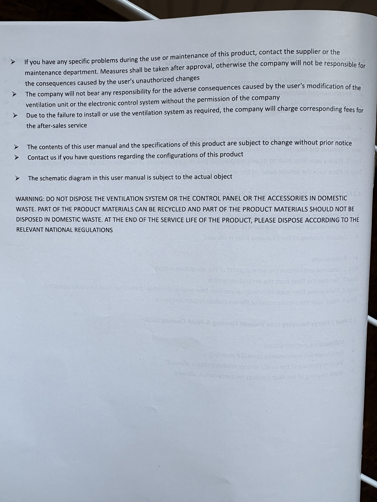
Řídicí systém · úvod
Řídicí systém s panelem VK8
Druhý manuál (OV1.2) popisuje instalaci a obsluhu řídicího systému MVHR s dotykovým panelem VK8. Panel zobrazuje datum a čas, venkovní podmínky, CO₂, vlhkost, teplotu, PM2.5, VOC a rychlosti obou ventilátorů; umí automatiku podle kvality vzduchu, bypass, ohřívače, boost a WiFi připojení do aplikace Tuya Smart.
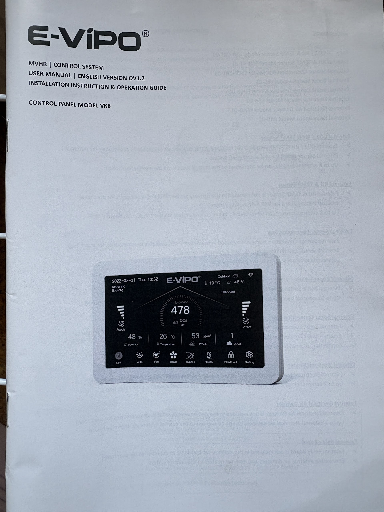
Řídicí systém · kapitola 01
Instalace panelu a zapojení
Schémata a tabulky níže popisují propojení napájení a řídicího systému. Pro rychlé zapojení standardního modelu použijte svorkovnice T1-A1 (napájení 230 V~) a T3-D1 (ovládací panel).
Deska AC/EC Motor Drive Board (VL62)
| Svorka | Funkce |
|---|---|
| A2 · GND/N/L | → svorkovnice T1-A2 (napájení desky) |
| E1 · NO/NC/N | kabel H → bypassová klapka (řady C / CS / W / TP) |
| E2 · LO/N | → interní předehřev (volitelný) |
| E3 · L1/N | → interní dohřev (volitelný) |
| E4, E5 | rezerva |
| E6 · L4/N | napájení přívodního ventilátoru |
| E7 · L5/N | napájení odtahového ventilátoru |
| E8 | rezerva |
| [Supply]/[GND]/[0-10V] | řízení otáček EC přívodního ventilátoru |
| [Exhaust]/[GND]/[0-10V] | řízení otáček EC odtahového ventilátoru |
| D2 · +12/GND/B/A | → svorkovnice T3-D2 [DISP] (displej) |
| B2 · Boost | → svorkovnice T3-B2 [Boost] X1/X2 |
| F · CN7 | → externí reléová deska ERB-01 [F] |
| CN8 | propojka D–GND pro EC motory |
| C2 · CN9 | → čidlo teploty a vlhkosti (odtahová strana jednotky) |
| CN14 | → svorkovnice T3-C2 (12V/G/B/A) |
| CN12/13/15/16/17 | rezerva |
| NTC1 (ID) | čidlo teploty výfukového vzduchu |
| NTC2 (OD) | čidlo teploty venkovního vzduchu |
| Switch | bezpečnostní spínač (řady ES / CS / W) |
Bypassová klapka
| Typ A | Motor N ← z desky [H-E1][N]; Motor NO a NC přes mikrospínače → [H-E1][NO]/[NC] |
|---|---|
| Typ B | L, N ← [A2-CN1][J3]/[J2]; N/L, K1, K2 ← [H-E1][N]/[NO]/[NC]; konektor Com/A/B/C/D → krokový motor (deska Step_Motor_Drv_V1.0) |
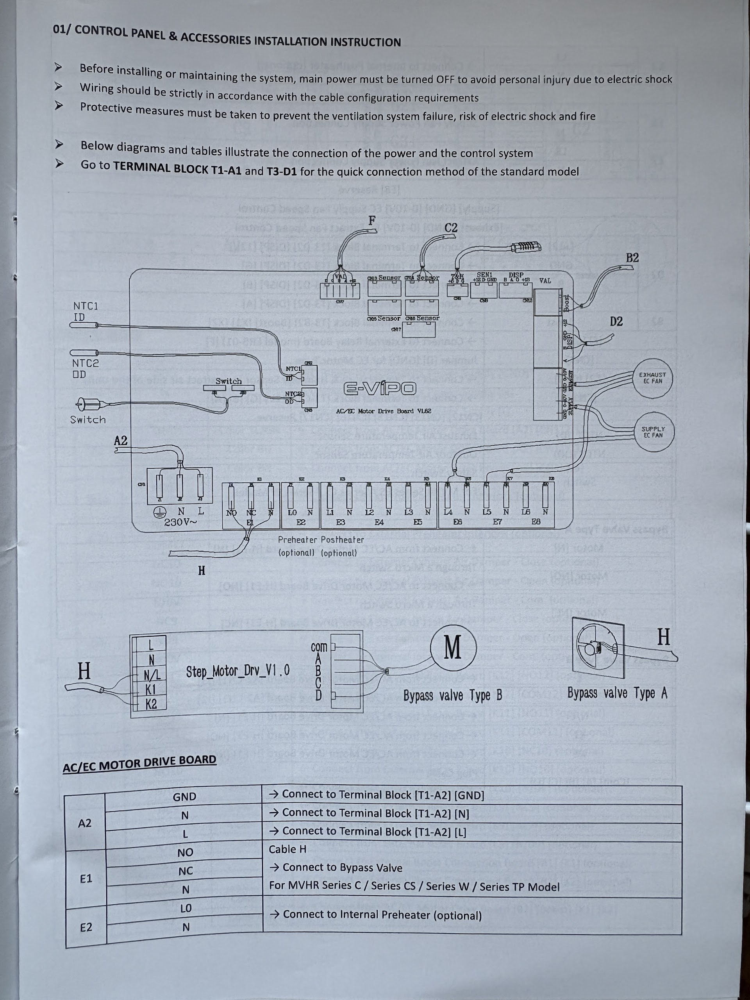
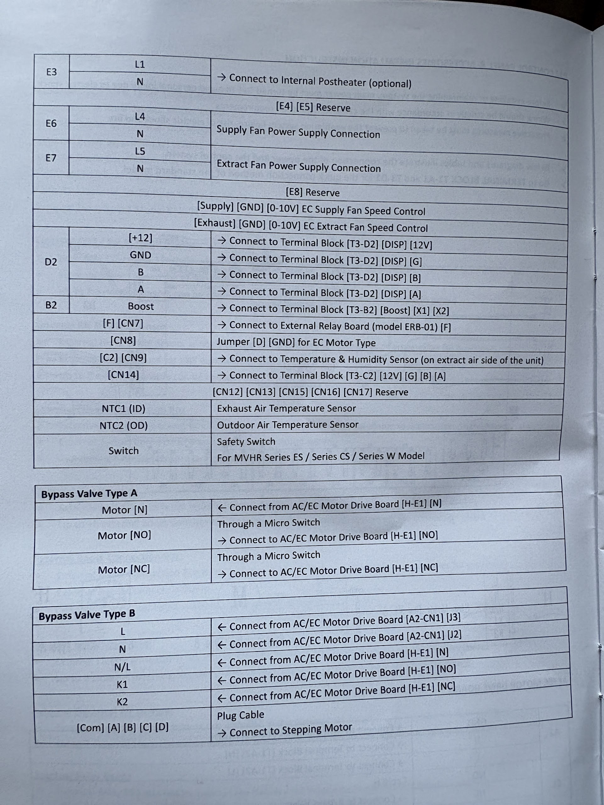
Svorkovnice (Terminal Block)
| Blok | Svorky | Zapojení |
|---|---|---|
| T1-A1 | GND · N · L | → přívod napájení od zákazníka (230 V~) |
| T1-A2 | GND (žl./zel.) · N (modrá) · L (hnědá) | ← z desky [A2][CN1] J1/J2/J3 |
| T2-G11 | NO12 · COM12 | → blokování externího dohřevu (volitelné) |
| T2-G21 | NO11 · COM11 | → blokování externího předehřevu (volitelné) |
| T2-G31 | NC10 · NO10 · N/0V | → externí klapka výfuku: zavřít / otevřít / společný (volitelné) |
| T2-G41 | NC9 · NO9 · N/0V | → externí klapka sání: zavřít / otevřít / společný (volitelné) |
| T2-G2 | NO12…N/0V (barvy dle tabulky) | ← z externí reléové desky K9–K12 (volitelné) |
| T3-B1 | X1 · X2 | → propojovací deska boost tlačítek [B1] (volitelné) |
| T3-B2 | X1 (šedá) · X2 (bílá) | ← z desky [B2][Boost] |
| T3-C1 | 12V · G · B · A | → propojovací deska čidel [MAIN] (volitelné) |
| T3-C2 | 12V (zel.) · G (modrá) · B (hnědá) · A (černá) | ← z desky [C2][CN13]/[CN14] |
| T3-D1 | 12V (hnědá) · G (modrá) · B (černá) · A (šedá) | → ovládací panel VK8, svorky 1–4 |
| T3-D2 | 12V (červená) · G (oranž.) · B (fial.) · A (žlutá) | ← z desky [D2] [DISP] |
Ovládací panel VK8 (svorky D1)
| Pin | Signál | Zapojení |
|---|---|---|
| 1 | 12V | ← svorkovnice T3-D1 [12V] |
| 2 | G | ← svorkovnice T3-D1 [G] |
| 3 | B | ← svorkovnice T3-D1 [B] |
| 4 | A | ← svorkovnice T3-D1 [A] |
| 5 | A | → externí RS485 [A] (smart home) |
| 6 | B | → externí RS485 [B] (smart home) |
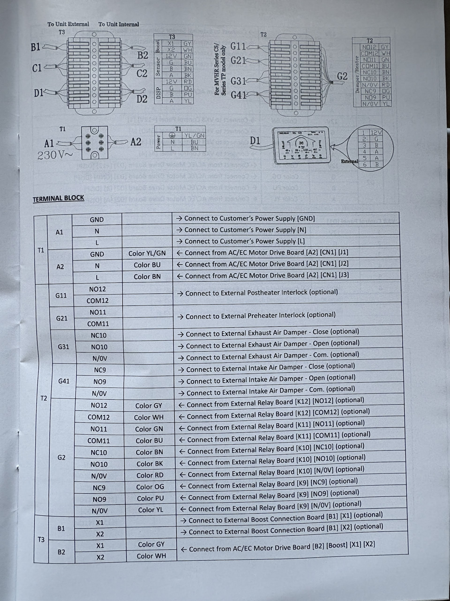
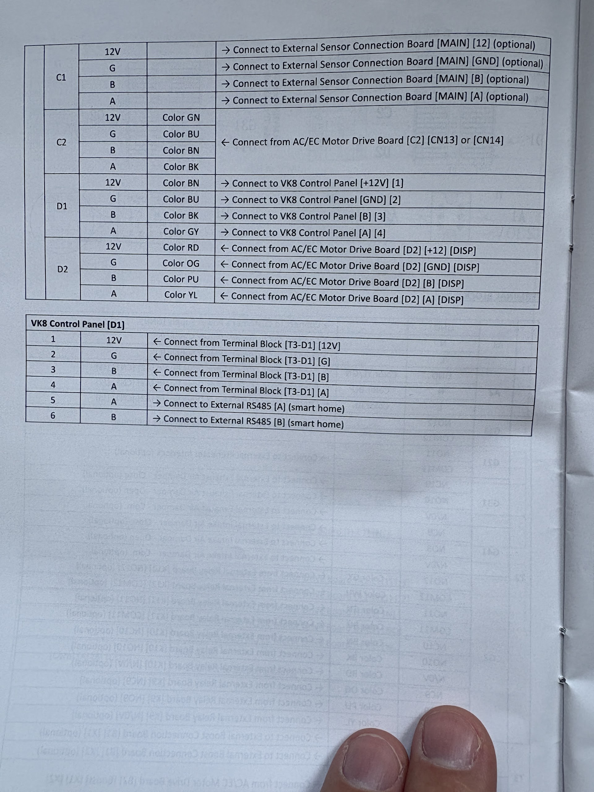
Řídicí systém · externí desky
Externí desky a čidla
Propojovací deska čidel (ESCB-CRT-01)
- Vstup C1 (MAIN 12V/GND/A/B) ← svorkovnice T3-C1
- Výstupy C11 na pozicích 1# až 9# → jednotlivé desky čidel (12V/GND/A/B)
- K systému lze připojit až 8 externích čidel (CO₂/RH/teplota — ESB-CRT-01, RH/teplota — ESB-RT-01)
Propojovací deska boost tlačítek (EBCB-01)
- Vstup B1 (X1/X2) ← svorkovnice T3-B1 [Boost]
- Pozice 1# až 10# (X1/X2) → externí boost tlačítka EBS-01
Externí reléová deska (ERB-01)
- A2 (N/0V · L/V+) ← z desky [A2-CN1] J2/J3
- F (D/C/B/A/12V) ← z desky [F][CN7]
- Reléové výstupy K9–K12 (N/0V, NO9/NC9 … NO12/NC12, COM11, COM12) → svorkovnice T2-G2
- Slouží k připojení externích klapek (EEAD-01, až 2) a externích ohřívačů (EEH-01, až 2)
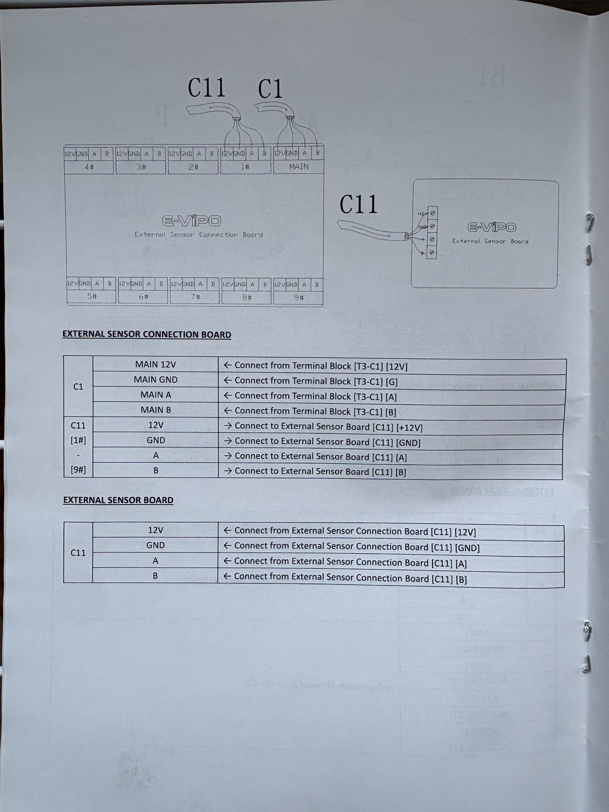
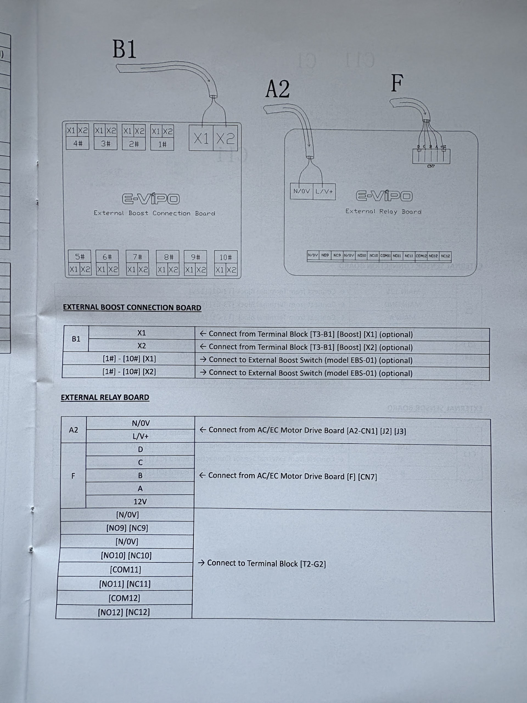
Řídicí systém · kapitola 02
Hlavní obrazovka panelu
Hlavní obrazovka (Home) zobrazuje:
- Datum, den a čas — nastavuje se na stránce Datum a čas
- Outdoor — teplota nasávaného venkovního vzduchu z čidla jednotky; venkovní vlhkost a ikona počasí z cloudu
- Ikona WiFi — stav spárování s cloudem a aplikací
- Defrosting — právě běží odmrazování (spouštěcí teplotu nastavíte v Dalších funkcích)
- Boosting — právě běží intenzivní větrání (délku nastavíte v Dalších funkcích)
- Filter Alert — vypršel časovač čištění/výměny filtru ze Správy filtrů
- Supply / Extract — aktuální stupeň přívodního a odtahového ventilátoru; při zapnutém režimu Fan Separation lze v ručním režimu nastavovat každý ventilátor zvlášť
- CO₂ [ppm] — z čidla panelu (při externích čidlech nejvyšší naměřená hodnota) + barevný ukazatel Excellent/Good/Bad (zelená/žlutá/červená)
- Vlhkost [%] — odtahový vzduch z čidla jednotky (při externích čidlech nejvyšší hodnota)
- Teplota [°C] — odtahový vzduch z čidla jednotky
- PM2.5 [µg/m³] a VOCs — z čidel panelu
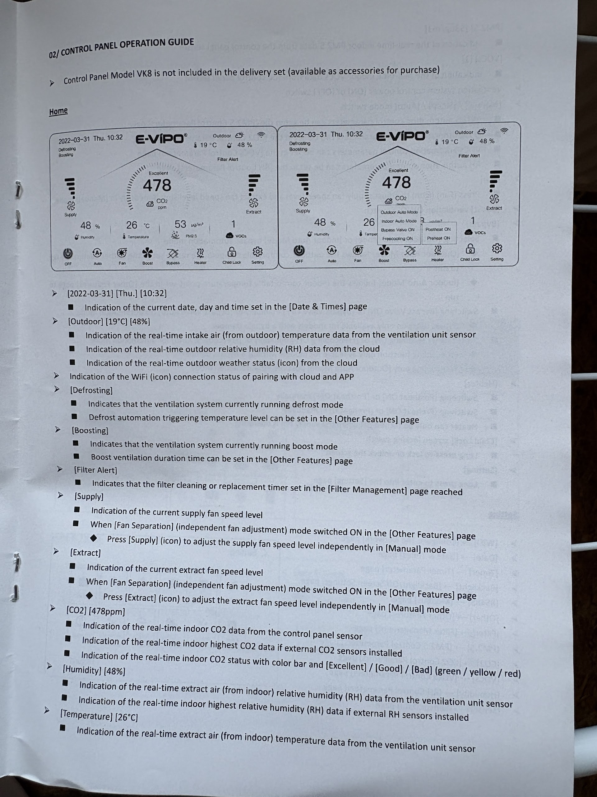
Řídicí systém · ovládání
Ovládací prvky (spodní lišta)
- OFF — hlavní vypínač větrání
- Auto — přepínač režimů Manual / Sleep / Auto; automatika se řídí parametry PM2.5, CO₂, VOC a vlhkosti (viz automatika)
- Fan — v ručním režimu nastavuje stupeň přívodního i odtahového ventilátoru současně
- Boost — zapnutí/vypnutí intenzivního větrání; spustí se i externím boost tlačítkem. Systém běží na maximum po nastavenou dobu a pak se vrátí do normálního režimu
- Bypass — volba automatiky Outdoor Auto Mode (venkovní komfortní rozsah) nebo Indoor Auto Mode (vnitřní komfortní bod); ručně lze klapku přepnout Bypass Valve ON/OFF, případně Auto. U modelů bez klapky je k dispozici Freecooling ON/OFF/Auto (u něj funguje jen Outdoor Auto Mode)
- Heater — ruční zapnutí dohřevu (Postheat) nebo předehřevu (Preheat); ohřívač lze zapnout jen při běžícím přívodním ventilátoru
- Child Lock — dlouhý stisk zamkne/odemkne obrazovku
- Setting — dlouhý stisk otevře nastavení
Menu Nastavení
Dlaždice: WiFi (konfigurace sítě) · Date (datum a čas) · Timer (časovač) · Backlight (podsvícení) · RS485 (Modbus) · Other (další funkce) · Filter (správa filtrů) · PM2.5 · CO₂ · VOCs · Humidity · Sensor (data čidel).
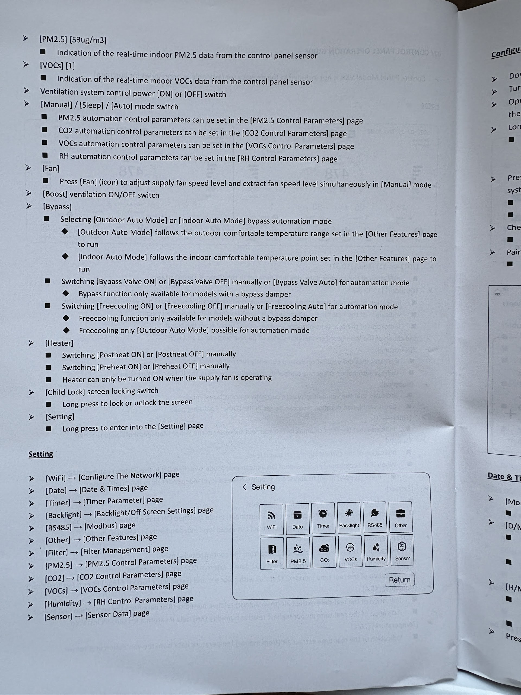
Řídicí systém · nastavení
WiFi, datum a čas, časovač, podsvícení
Připojení k síti (aplikace Tuya Smart)
- Stáhněte aplikaci Tuya Smart, na telefonu zapněte WiFi i Bluetooth
- V aplikaci se zaregistrujte a zvolte Přidat zařízení
- Na panelu dlouze stiskněte Network — párování začne, jakmile ikona WiFi bliká
- V aplikaci stiskněte Add, jakmile se jednotka objeví nahoře; případně vyberte ručně Small Home Appliances → Ventilation System (BLE+Wi-Fi)
- Zadejte jméno a heslo domácí WiFi (2,4 GHz)
- Podle stavu ikony WiFi na panelu zvolte v aplikaci Blink Slowly / Blink Quickly
- Po úspěšném přidání přestane ikona WiFi blikat a zůstane plná
Datum a čas
- Vyberte aktuální den v týdnu (Po–Ne)
- Šipkami nastavte datum D/M/Yr a čas H/Min/S
- Uložte tlačítkem Save
Časovač (Timing Parameter)
- Pro každý den v týdnu lze nastavit čas zapnutí (Boot time, např. 08:00) a vypnutí (Shutdown time, např. 23:00)
- Šipkami nastavíte hodnoty; přepínačem vedle šipek se daný časovač zapíná/vypíná
- Uložte tlačítkem Save
Podsvícení a zhasínání (Backlight/Off Screen)
- Backlight brightness (např. 50 %) — jas při aktivním ovládání
- Screen off brightness (např. 18 %) — jas v klidu
- Turn off screen time (např. 69 s) — za jak dlouho bez dotyku se aktivuje spořič
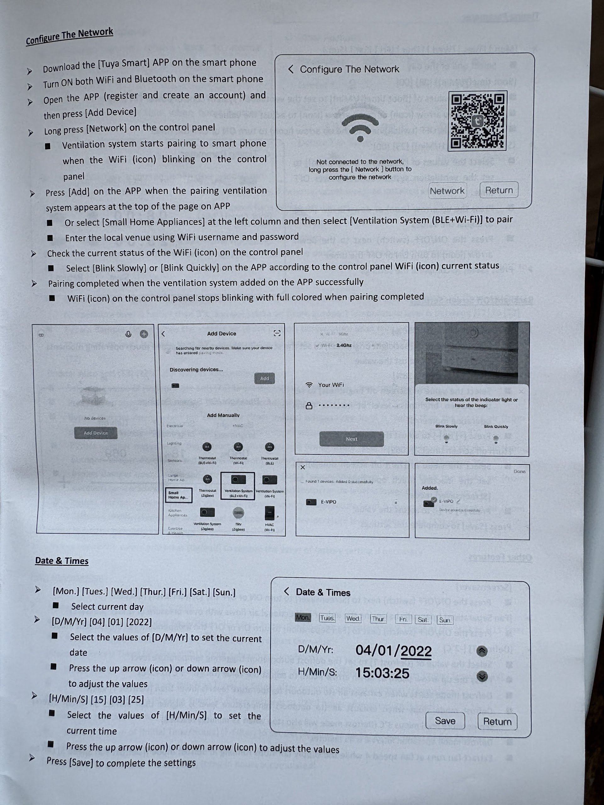
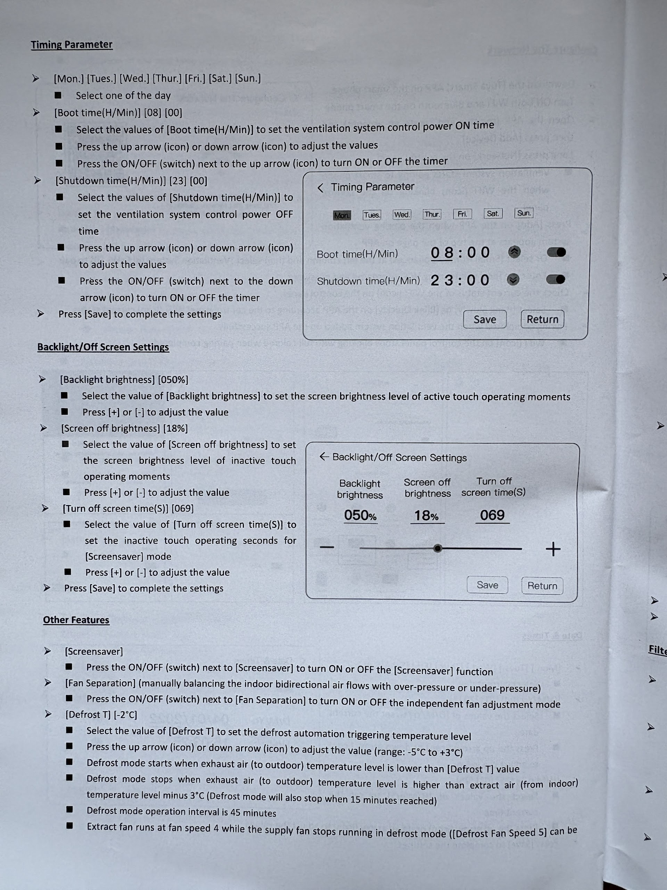
Řídicí systém · další funkce
Další funkce a správa filtrů
Other Features
- Screensaver — zapnutí/vypnutí spořiče obrazovky
- Fan Separation — nezávislé nastavení obou ventilátorů (ruční vyvážení obousměrných toků, přetlak/podtlak)
- Defrost T (např. −2 °C, rozsah −5 až +3 °C) — spouštěcí teplota odmrazování. Odmrazování začne, když teplota výfuku ven klesne pod nastavenou mez, a skončí, když stoupne nad teplotu odtahu z interiéru minus 3 °C (nejpozději po 15 minutách). Interval mezi cykly je 45 minut. Při odmrazování běží odtahový ventilátor na stupeň 4 (volitelně Defrost Fan Speed 5) a přívodní stojí; po dokončení se systém vrátí do normálního chodu
- Boost Time (např. 15 min) — délka intenzivního větrání po stisku Boost na panelu nebo externího tlačítka; po uplynutí se systém vrátí do normálního chodu
- Outdoor Auto Range T1/T2 (např. 13 °C / 26 °C; T1: +10…+20 °C, T2: +20…+40 °C) — venkovní komfortní rozsah pro automatiku bypassu. Klapka se otevře, když je odtah z interiéru alespoň o 3 °C teplejší než venkovní vzduch a venkovní teplota je mezi T1 a T2; zavře se, když rozdíl klesne pod 3 °C nebo venkovní teplota rozsah opustí
- Indoor Auto Set T3 (např. 23 °C; rozsah +15…+40 °C) — vnitřní komfortní bod. Rozhoduje se podle teploty odtahu (interiér), venkovního vzduchu a pásma T3 ± 3 °C:
- interiér teplejší než venek: klapka se otevře, když je interiér nad T3 + 3 °C (přetopeno → chladit venkovním vzduchem), a zavře, když klesne pod T3 − 3 °C
- interiér chladnější než venek: klapka se otevře, když je interiér pod T3 − 3 °C (vytápět venkovním vzduchem), a zavře, když stoupne nad T3 + 3 °C
- Uložení tlačítkem Save; Default vrátí tovární hodnotu vybrané položky
Správa filtrů (Filter Management)
Pro tři typy filtrů běží nezávislá počítadla provozních hodin; po dosažení limitu se na hlavní obrazovce objeví Filter Alert:
| Filtr | Výchozí limit (Initial Time) | Odpovídá |
|---|---|---|
| G-Filter (G4) | 2190 h | ~3 měsíce |
| F-Filter (F8) | 4380 h | ~6 měsíců |
| H-Filter (H13/H11) | 8760 h | ~12 měsíců |
- Šipkami lze limity upravit; Already Working Time ukazuje naběhané hodiny
- Po vyčištění/výměně filtru stiskněte Reset — počítadlo se vrátí na 000
- Default vrátí tovární limit; stiskem názvu typu filtru sloupec skryjete, pokud filtr není osazen
- Uložte tlačítkem Save
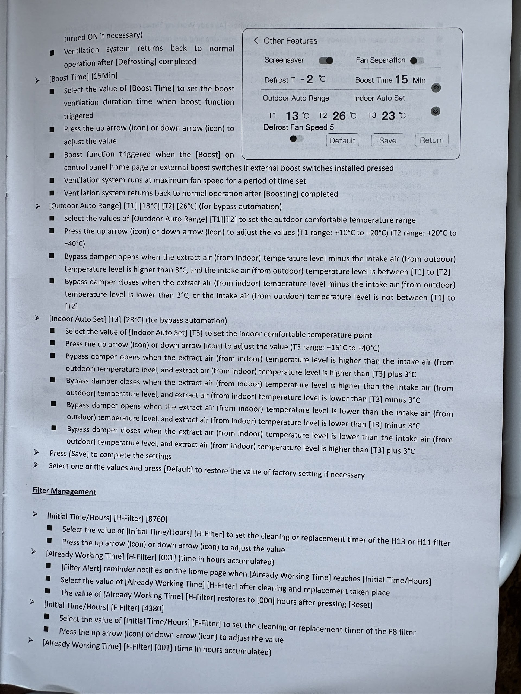
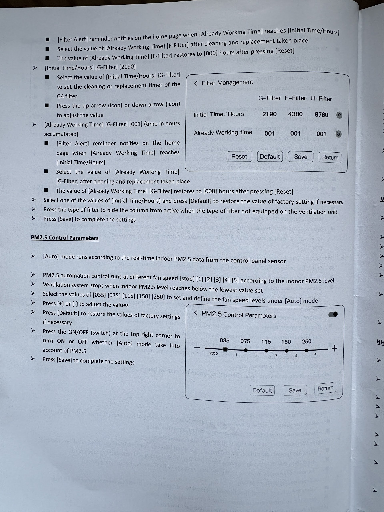
Řídicí systém · automatika
Parametry automatiky: PM2.5, CO₂, VOC, vlhkost
V režimu Auto řídí systém otáčky ventilátorů podle aktuálních hodnot z čidel. Pro každou veličinu je pět prahů, které definují stupně ventilátoru stop, 1, 2, 3, 4, 5 — jakmile hodnota klesne pod nejnižší práh, větrání se zastaví. Každou veličinu lze z automatiky vyřadit přepínačem vpravo nahoře na její stránce. Hodnoty se upravují tlačítky +/−, Default vrací tovární nastavení, Save ukládá.
| Veličina | Zdroj dat | Tovární prahy (stupeň 1–5) |
|---|---|---|
| PM2.5 [µg/m³] | čidlo panelu | 035 · 075 · 115 · 150 · 250 |
| CO₂ [ppm] | čidlo panelu; při externích čidlech nejvyšší hodnota | 400 · 1000 · 1500 · 2500 · 3500 |
| VOC | čidlo panelu | 0,50 · 1,00 · 1,60 · 2,30 · 3,50 |
| Vlhkost RH [%] | čidlo odtahu v jednotce; při externích čidlech nejvyšší hodnota | 55 · 60 · 70 · 80 · 90 |
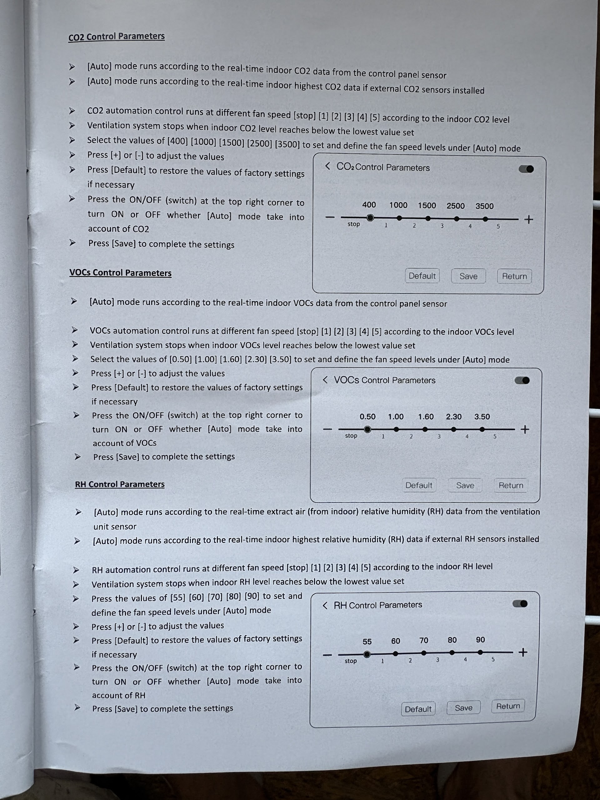
Řídicí systém · integrace
Modbus RS485 protokol (V1.0.14)
Panel VK8 lze napojit na nadřazený systém (smart home, Home Assistant apod.) přes Modbus RTU po RS485. Podklad: dokument VK8 External Modbus Protocol V1.0.14 (originál PDF).
Zapojení a nastavení
- Zapojení: vodiče na svorky 5 (A) a 6 (B) svorkovnice na zadní straně panelu (viz tabulka svorek D1)
- Adresa zařízení: na panelu Setting → RS485 → Modbus, rozsah 1–254 (výchozí 001); zapíná se přepínačem Modbus Auxiliary Engine
- Komunikace: RS485, Modbus RTU
- Sériová linka: 9600 Bd, 8 datových bitů, 1 stop bit, bez parity
- Podporované funkce: 0x03 (čtení registrů), 0x06 (zápis jednoho registru), 0x10 (zápis více registrů)
Mapa registrů (adresy dekadicky)
| DEC | Typ | Význam | Hodnoty |
|---|---|---|---|
| 00 | R/W | Stav zařízení | 0 = vypnuto · 1 = zapnuto |
| 01 | R/W | Provozní režim | 0 = Auto · 1 = Manual · 2 = Sleep |
| 02 | R/W | Stupeň přívodního ventilátoru | 1–5 |
| 03 | R/W | Stupeň odtahového ventilátoru | 1–5 |
| 04 | R/W | Režim automatiky bypassu | 0 = Indoor Auto · 1 = Outdoor Auto |
| 05 | R/W | Ovládání bypassové klapky | 0 = ručně zavřeno · 1 = ručně otevřeno · 2 = Auto |
| 06 | R/W | Externí klapka (shutter) | 0 = zavřena · 1 = otevřena · 2 = Auto |
| 07 | R/W | Dohřev (Postheat) | 0 = vyp · 1 = zap |
| 08 | R/W | Předehřev (Preheat) | 0 = vyp · 1 = zap |
| 09 | R/W | Hodiny provozu H-filtru | 0–999 h · zápis 0xAA = reset |
| 10 | R/W | Hodiny provozu F-filtru | 0–999 h · zápis 0xAA = reset |
| 11 | R/W | Hodiny provozu G-filtru | 0–999 h · zápis 0xAA = reset |
| 12 | R/W | Boost | 0 = stop · 1 = start |
| 13 | R/W | Fan Separation (nezávislé ventilátory) | 0 = vyp · 1 = zap |
| 14 | R/W | Free Cooling | 0 = vyp · 1 = zap |
| 15 | R | Teplota odtahu (interiér) | −10 až 50 °C |
| 16 | R | Vlhkost odtahu (interiér) | 0–99 % |
| 17 | R | PM2.5 (čidlo panelu) | 0–999 µg/m³ |
| 18 | R | CO₂ (čidlo panelu) | 400–5000 ppm |
| 19 | R | VOC (čidlo panelu) | úroveň 1–4 |
| 20 | R | Odmrazování | 0 = neběží · 1 = běží |
| 21 | R | Teplota výfuku ven | −10 až 50 °C · 0x7FFF = chyba/chybí čidlo |
| 22 | R | Venkovní teplota | −10 až 50 °C · 0x7FFF = chyba/chybí čidlo |
| 23–31 | R | Teplota externích čidel Onsite0–8 | −10 až 50 °C · 0x7FFF = chyba/chybí čidlo |
| 32–40 | R | Vlhkost externích čidel Onsite0–8 | 0–100 % · 0x00FF = chyba/chybí čidlo |
| 41–49 | R | CO₂ externích čidel Onsite0–8 | 400–5000 ppm · 0xFFFF = chyba/chybí čidlo |
Napojení přes ESP32 (Home Assistant)
Praktická integrace do Home Assistanta: ESP32 s RS485 převodníkem pověšený na svorky 5/6 panelu, firmware ESPHome s modbus_controller. Kompletní konfigurace, HA balíček a schéma jsou v repozitáři Pajaaaa/Rekuperace.
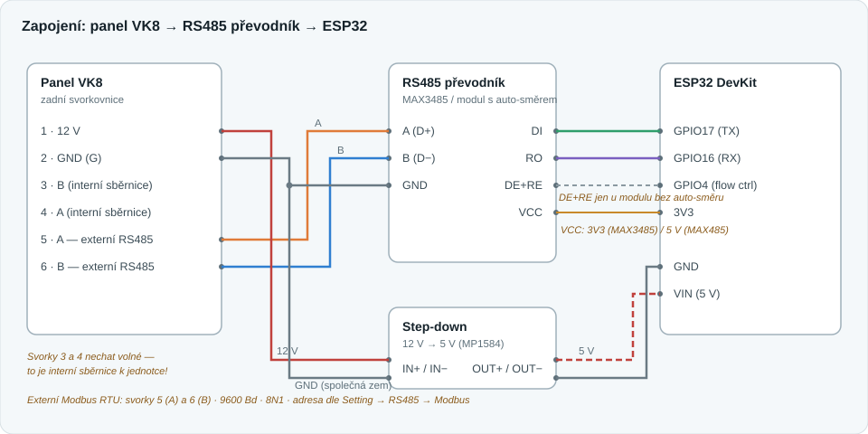